<nav class="navbar navbar-expand-lg navbar-light fixed-top">
    <div class="container">
        <a class="navbar-brand" href="#"></a>
        <button class="navbar-toggler" type="button" data-toggle="collapse" data-target="#navbarSupportedContent"
            aria-controls="navbarSupportedContent" aria-expanded="false" aria-label="Toggle navigation">
            <span class="navbar-toggler-icon"></span>
        </button>
        <div class="collapse navbar-collapse" id="navbarSupportedContent">
            <ul class="navbar-nav ml-auto">
                <li class="nav-item" *ngFor="let navbar of navBarItems">
                    <a class="nav-link" (click)="onSelected(navbar.link)"
                        [ngClass]="{'active' : currentSelected === navbar.link }"
                        href="#{{navbar.link}}">{{navbar.name}} <span class="sr-only">(current)</span>
                    </a>
                </li>
            </ul>
        </div>
    </div>
</nav>

<!-- routerLinkActive="active" [routerLinkActiveOptions]="{exact:
    false}" -->